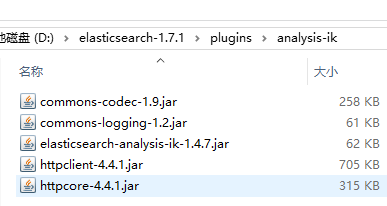

ElasticSearch使用elasticsearch-analysis-ik
ElasticSearch使用elasticsearch-analysis-ik
感谢Medcl带来的ik分词插件。
为什么要用ik?
因为Elasticsearch本身不支持中文分词，使用默认的解析器会把中文分解成单个字，查询的时候很不方便。
下载ik插件
1 | https://github.com/medcl/elasticsearch-analysis-ik |
Maven打包，生成jar包
1 | mvn clean package |
安装插件
1 | plugin —install analysis-ik —url file:///#{project_path}/elasticsearch-analysis-ik/target/releases/elasticsearch-analysis-ik-1.4.0.zip |
其实这种方式就是将jar包拷贝到elasticsearch/plugins目录下。

然后，将elasticsearch-analysis-ik-master\config\ik目录复制到elasticsearch\config目录中。
修改elasticsearch/config/elasticsearch.yml文件，在最下方添加：1
2
3
4
5
6
7
8
9
10
11
12
13
14
15
16
17
18################################## ik ################################
index:
analysis:
analyzer:
ik:
alias: [ik_analyzer]
type: org.elasticsearch.index.analysis.IkAnalyzerProvider
char_filter: html_strip
ik_max_word:
type: ik
use_smart: false
ik_smart:
type: ik
use_smart: true
tokenizer:
ik_smart:
type: ik
use_smart: true
启动elasticsearch服务，至此ik插件就完成安装了。